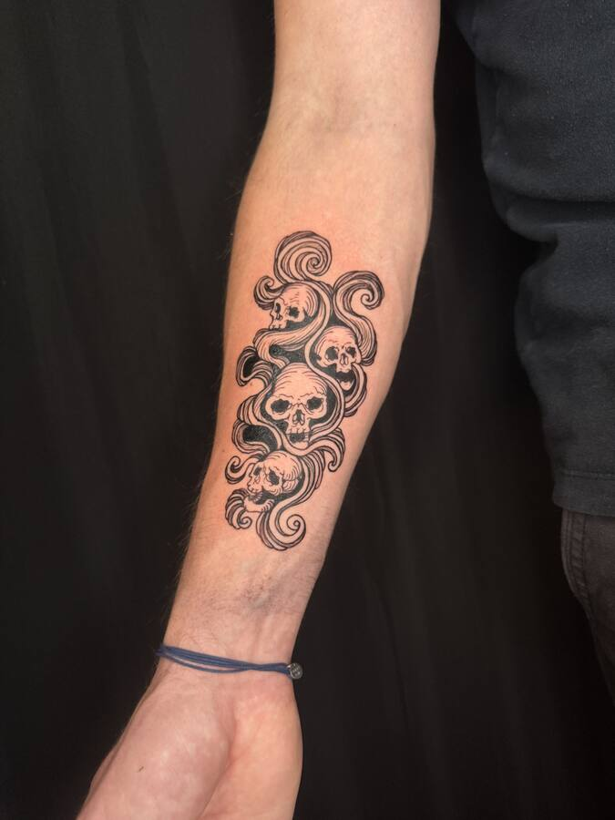
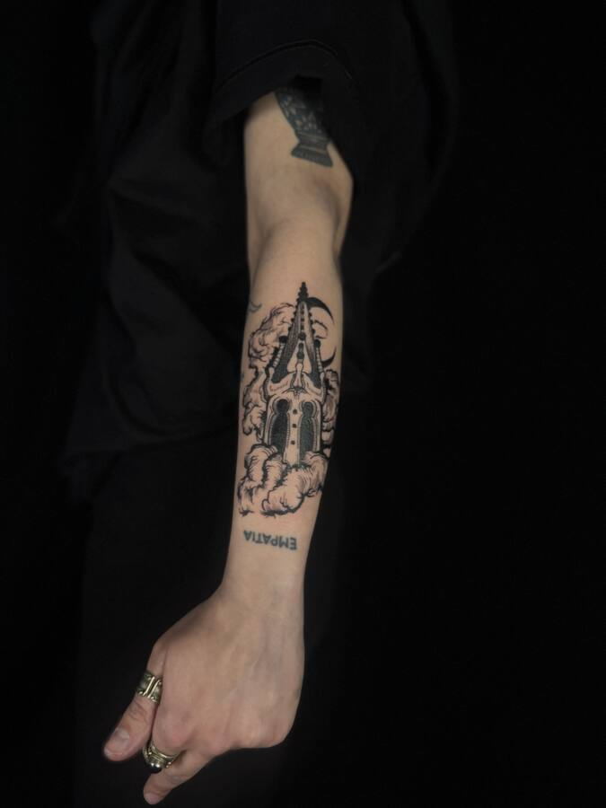
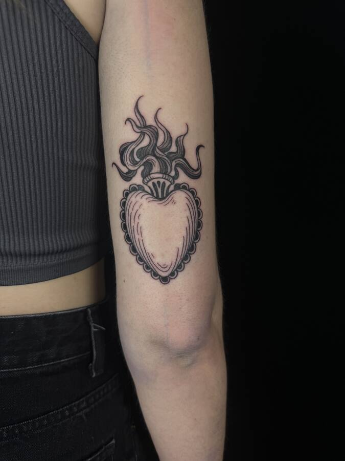

① Mains
Elle tient, elle offre, elle menace.
La main est le premier sujet de Maxime et celui qu'il n'a jamais lâché. Elle tient, elle offre, elle menace. Dague, roses, serpent : ce qu'elle porte dit ce qu'on garde et ce qu'on donne. Les mains se placent presque toujours sur la cuisse ou l'avant-bras, où elles peuvent se lire debout.


② Bêtes
Venues des enluminures et des bestiaires.
Les bêtes viennent des enluminures et des bestiaires : des animaux qu'on reconnaît sans pouvoir tout à fait les nommer. Un cœur ailé qui fleurit, une bête cornue au mollet, une hirondelle qui plonge sur le flanc. Elles se posent là où le corps bouge, pour que le dessin bouge avec.


③ Crânes, cierges et brume
Ce qui reste, ce qui éclaire, ce qui passe.
Rien de morbide : le crâne est ce qui reste, le cierge est ce qui éclaire, la brume est ce qui passe. Ces trois figures reviennent ensemble, souvent sur l'avant-bras, en pièces verticales où l'on lit de bas en haut. La cathédrale dans les nuages est un projet personnalisé devenu un motif récurrent.





④ Yeux et soleils
Les figures les plus anciennes du répertoire, placées au centre du corps.
L'œil qui rayonne et le soleil à visage sont les deux figures les plus anciennes du répertoire, celles qu'on trouve gravées sur les cadrans et les frontispices. Elles se placent au centre : sternum, poitrine, pli du coude. Petites, elles se lisent de loin.